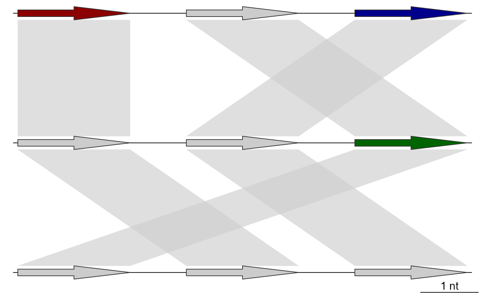
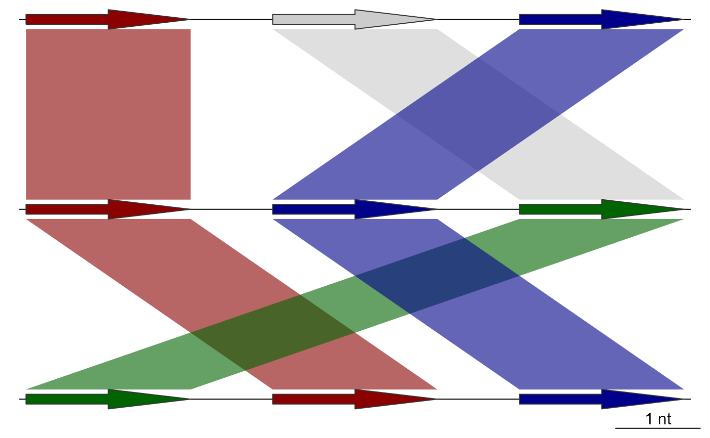
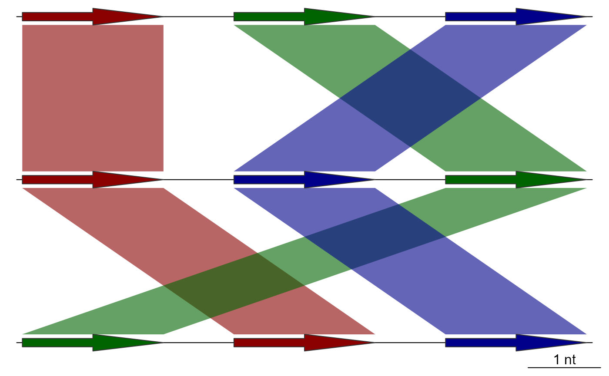

Update dna_segs and comparisons sequentially in plotting order
sequential_updates.RdTakes a list of dna_seg and a list of comparison objects, and then
updates both sequentially, in plotting order. This can be used to update the
positions of the comparisons, as well as the color and region_plot
attributes of both the dna_segs and comparisons. It does this by taking the
values of features for these attributes and transferring those over to
comparisons directly connected to it, and then to the features connected to
those comparisons. For example, if a feature from a single dna_seg has red
as its fill attribute, the comparisons that can be linked to this feature
will become red as well. This is then followed up by updating any dna_seg
features linked to those comparisons, and so on.
Usage
sequential_updates(
dna_segs,
comparisons,
seg_id = "locus_id",
comparison_id = "auto",
color_var = NULL,
default_color = "grey80",
update_region_plot = TRUE,
update_positions = FALSE,
both_directions = TRUE
)Arguments
- dna_segs
A list of
dna_segobjects.- comparisons
A list of
comparisonobjects.- seg_id
The name of a
dna_segcolumn, whose values will be used to make the links to thecomparisons.- comparison_id
The shared name of the
comparisoncolumns, whose values will be used to make the links to thedna_segs. See details.- color_var
A character string denoting which color attribute to update, must be one of:
"fill","col", or left asNULL, which means no color will be updated.- default_color
A character string providing a default color, must be either
NULLor a valid color. The color given by this argument will be ignored when updating, never overwriting any other color.- update_region_plot
Logical. If
TRUE, updates theregion_plotattribute ofdna_segs(and ofcomparisonsbut only to pass this information to thedna_segsthat follow), which determines whether the neighborhood of these features is plotted in a regional plot.- update_positions
Logical. If
TRUE, updates the plotted positions of the comparisons to match thedna_segs.start1andend1will be updated using thedna_segabove thecomparisonin plotting order, whilestart2andend2will be updated using thedna_segunder thecomparisonin plotting order.- both_directions
Logical. If
FALSE, updates are applied sequentially in plotting order, starting from the firstdna_seg. Whenboth_directionsisTRUE, it will then additionally update eachdna_segandcomparisonin reverse plotting order.
Value
A list with 2 named elements: dna_segs and comparisons, which
are both lists containing the dna_seg and comparison objects,
respectively.
Details
When updating colors, the existing colors from the input dna_seg and
comparison objects are transferred over to the next object in the
plotting order, with the exception of their default colors, provided by
default_color. As comparison objects only have a single color
attribute col, those will be updated using the column provided by
color_var from the dna_segs, while the dna_segs themselves will be
updated using the col column from the comparisons regardless of color_var
(unless it is left as NULL to avoid updating colors entirely).
The objects are linked together through shared
values. The columns for these shared values are determined by the seg_id
and comparison_id arguments, for the dna_segs and comparisons,
respectively. comparison_id refers to 2 columns, and defaults to "auto",
which will attempt to determine which columns to use automatically.
If for example, comparison_id is set as "name", it will look for the
"name1" and "name2" columns to match to the seg_id in the dna_segs
above, and under it, respectively.
There are some circumstances with very interconnected comparisons where
you might want to set both_directions to FALSE to avoid transferring
over the region_plot attribute to too many features.
Examples
## Prepare dna_seg
names1 <- c("1A", "1B", "1C")
names2 <- c("2A", "2C", "2B")
names3 <- c("3B", "3A", "3C")
## Make dna_segs with some alternate colors
dna_seg1 <- dna_seg(data.frame(name=names1, start=(1:3)*3, end=(1:3)*3+2,
strand=rep(1, 3),
fill=c("darkred", "grey80", "darkblue")))
dna_seg2 <- dna_seg(data.frame(name=names2, start=(1:3)*3, end=(1:3)*3+2,
strand=rep(1, 3),
fill=c("grey80", "grey80", "darkgreen")))
dna_seg3 <- dna_seg(data.frame(name=names3, start=(1:3)*3, end=(1:3)*3+2,
strand=rep(1, 3)))
## Make comparisons
comp1 <- comparison(data.frame(start1=c(3,6,9), end1=c(5,8,11),
start2=c(3,9,6), end2=c(5,11,8),
name1=c("1A", "1B", "1C"),
name2=c("2A", "2B", "2C"),
direction=c(1,1,1)))
comp2 <- comparison(data.frame(start1=c(3,9,6), end1=c(5,11,8),
start2=c(6,3,9), end2=c(8,5,11),
name1=c("2A", "2B", "2C"),
name2=c("3A", "3B", "3C"),
direction=c(1,1,1)))
## Before applying sequential_updates
plot_gene_map(dna_segs=list(dna_seg1, dna_seg2, dna_seg3),
comparisons=list(comp1, comp2),
alpha_comparisons=0.6)

## Applying sequential_updates without updating in both directions
full_data <- sequential_updates(list(dna_seg1, dna_seg2, dna_seg3),
comparisons=list(comp1, comp2),
seg_id = "name",
color_var = "fill",
both_directions = FALSE)
plot_gene_map(dna_segs=full_data$dna_segs,
comparisons=full_data$comparisons,
alpha_comparisons=0.6)

## Applying sequential_updates using both directions
full_data <- sequential_updates(list(dna_seg1, dna_seg2, dna_seg3),
comparisons=list(comp1, comp2),
seg_id = "name",
color_var = "fill")
plot_gene_map(dna_segs=full_data$dna_segs,
comparisons=full_data$comparisons,
alpha_comparisons=0.6)
